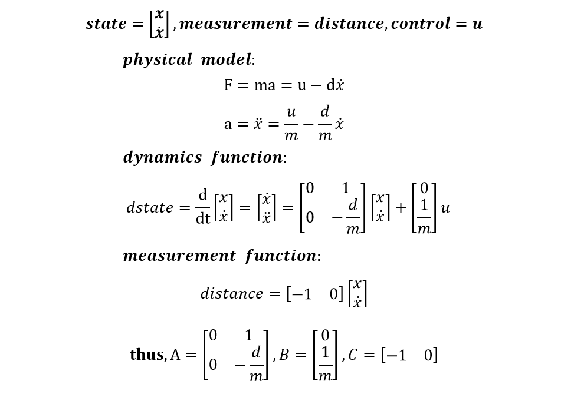
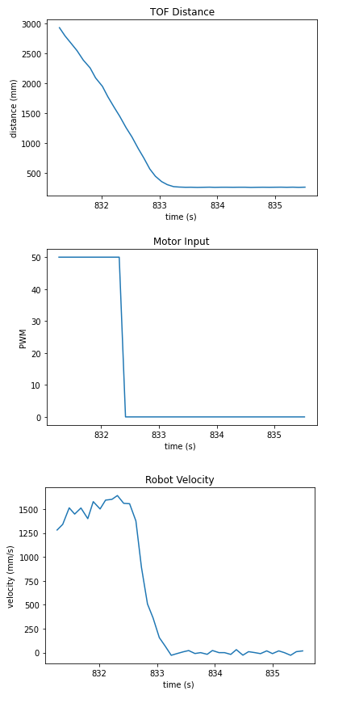
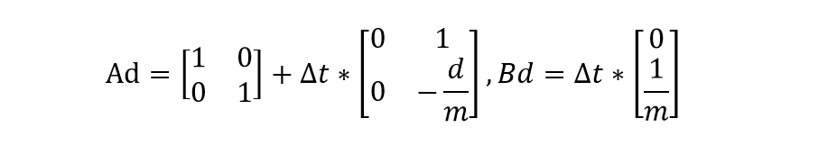
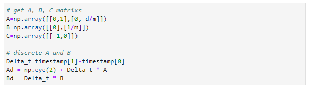
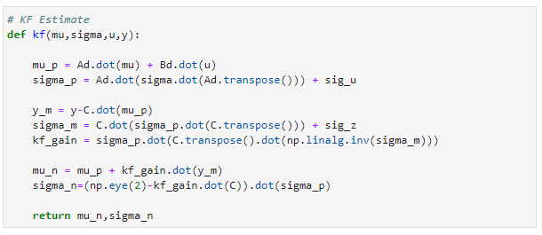

Parts Required
1 x Fully assembled robot, with Artemis, batteries, ToF sensor, and IMU.
State Space Equations
Task Description： the robot will drive fast forward towards a wall until the distance is less than 800mm, then turn with drift to do a 180-degree turn, and return the direction it came from without stopping.
In this lab, I am going to use sensor fusion to help estimate the distance to the wall frequently, despite the slow sampling time of the ToF sensor. According to the lecture 12, the state is [x,v]' (2-by-1 vector), while the measurement is the distance from the front of the car to the wall, obtained by the ToF sensor. The combined force is input u minus damping force. The equations are shown below.
Step Response
To get the A and B matrices, we need to estimate d and m through a step response. I made the car drive towards a wall while logging the distances and timestamps. The PWM value was 50 when the distance was larger than 800 mm. Otherwise, the car would stop immediately to avoid a collision. I put the car around four meters away from the wall, which was long enough for the car to reach a steady state. four meters is also the maximum measurement length of the ToF sensor.
I got the distances, timestamps and the motor input value from the debugging data and then calculated the velocity.
The steady speed was around 1580 mm/s and the rise time was nearly 0.5144 s. And then we were able to get the d and m.
Kalman Filter Setup
A, B, C Matrics
According to the state space equations and step response, we can then get the A and B matrics. In my model, the A = [0,1;0,-4.476], and B = [0;7072.48]. Since the distances are measured discretely, the discrete A and B is going to be:

I roughly took the first period as the delta_t, which was 0.09696 s. Here is the related code in python.
Process noise and Sensor noise Covariance Matrices
Reasonable process noise and sensor noise covariance matrices are important in the Kalman Filter. If the process noise is larger, Kalman Filter will trust more on the measurements. While if the sensor noise is too big, the model will give more confidence to the prediction of the dynamic. However, if the values are set too small, the Kalman Filter will not work, if the values are too big, it will barely respond. I set the noise covariance matrices the same as in the slides: sigma_u=[27.7^2,0;0,27.7^2], sigma_z=20^2; Later, I tuned them and got different Kalman Filter outputs.
Sanity Check the Kalman Filter
Initial State and Sigma
I determined the origin of the x to be the wall and the positive direction of x-axis is the direction of car movement. Therefore, -distance[0] and velocity[0] was the initial state. The initial sigma was set to [5^2,0;0,5].
Kalman Filter Function
There are two main steps in the Kalman Filter: prediction and update. 'prediction' calculates the mu_bar and sigma_bar according to the last time state and the control u. And kalman gain is determined by the sigma_bar, process and sensor noise covariance matrices. With smaller measurement noise, kalman gain is going to be bigger and give more trust on measurements. In the update step, mu equals mu_bar plus kalman gain multiplied by the difference between the true and expected measurements. Here is the related function.

Kalman Filter Output
I tried the Kalman Filter with different process noise and sensor noise. As shown in the figures, if the sensor noise is relatively smaller, the distances will be closer to the measured values. With sigma_u=[27.7^2,0;0,27.7^2] and sigma_z=20^2, output KF distances are aligned with the measurements well.

Implement Kalman Filter on the Robot
By implementing the model above in the robot, we can get a faster controller. If the ToF sensor data is not ready, I will set the d_tof to be -100, indicating it is unavailable. Then Kalman Filter will do the prediction only so that we can still get the distance information and generate a motor input value. While the sensor is ready, both prediction and update will be executed. Here is the Kalman Filter function in Arduino.
Posted by Lanyue Fang on Mar 21, 2022